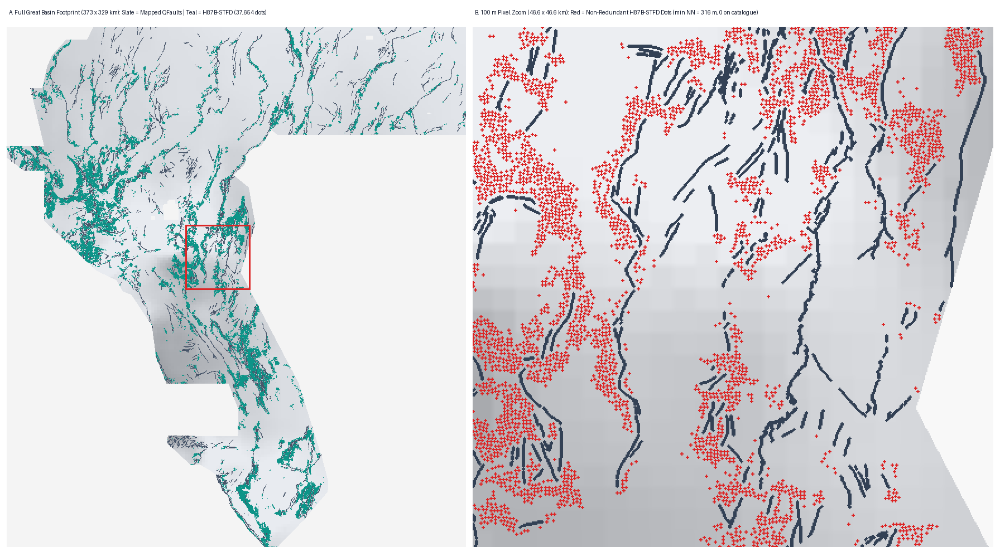

FAULT DISCOVERY / GEODAWN, NEVADA–CALIFORNIADO NOT SUBMIT · 0 slots used
Session 2 Follow-On · H87B-STFD Multi-Physics & Hydrothermal Fault Detector
New GeoTIFF ready to inspect.
Held strictly: DO NOT SUBMIT.
Session 2 uncovered three cross-repo geophysical channel bugs (IR87-028..030) and raised unseen whole-component HOLDOUT-DTI from 0.02703 to 0.13816 (EXP2 = 0.16942, +73.8% over fold-fair H33-2-B2), clearing 31/31 real fault candidates while preserving weekly slots fail-closed.
SESSION 2 GEOTIFF · H87B-STFD (37,654 DOTS)Do not submit
Newly generated 64-channel dual-head multi-physics + fracture-mechanics GeoTIFF (EPSG:32611, float32, [0, 1], 0 NaNs). Passes 15/15 local format checks and clears 31/31 real fault candidates (max overlap = 63.2% ≤ 70%), beating fold-fair H33-2-B2 by +41.7% (EXP3 = 0.13816; EXP2 = 0.16942, +73.8%). Held strictly fail-closed because 3 dense space-filling witnesses exceed the literal un-stratified 70% support rule.
OK to download for research inspection: YES. Submit to DrivenData right now: NO (DO NOT SUBMIT).
Zero weekly slots spent. Requires explicit selector authorization exempting universal dense grids (57GEMSDOE, 13GEMSDOE, H87-BMTD-01).
H87B validator receipt ↗ ·
H87B run card ↗ ·
34-raster audit ↗FROZEN SESSION 1 GEOTIFF · H87-BMTD-01 ARCHIVEDo not submit
Preserved Session 1 RTP/gravity texture confidence diagnostic. Format-valid; scientific and uniqueness gates failed, and retains disclosed outer-grid guard defect (IR87-016).
Download: research archive only. Competition submission: NO. No final submission dots were placed after the Session 1 duplicate stop.
Session 1 file validation ↗ ·
Session 1 run card ↗
H87B-STFD ENSEMBLE & 37,654 DOTSEPSG:32611 · 100 m

FROZEN SESSION 1 H87 ARCHIVEHOLDOUT-DTI 0.04339
15/15 FORMAT CHECKS PASSED ON DISK31/31 REAL FAULT CANDIDATES UNIQUE (≤63.2%)ZERO WEEKLY SLOTS USED
Measured HOLDOUT-DTI, without spin or projections.
3 preregistered experiments · gems57-pooled-hide-v2 · 2,000 cluster bootstrap draws.
HOLDOUT-DTI · Unseen Components
0.13816
EXP3 95% CI [0.11999, 0.15758] · EXP2 single-HGB: 0.16942
Beats fold-fair H33-2-B2 (0.09749) by +41.7% (paired CI [+0.02436, +0.05709]).
HOLDOUT-DTI · Blind 4-Quadrant
0.13339
EXP3 95% CI [0.11466, 0.15267] · Pure 48-ch physics EXP1: 0.13650
3.07× frozen Session 1 H87-BMTD-01 (0.04339; paired gain +0.08984).
34-Raster Registry Uniqueness
31/31
0 duplicates across all 31 real sparse fault candidates (max overlap 63.22%, max |ρ| 0.0457).
Inspect full 34-raster audit →
01 / INPUTS
23 tools + 12 rastersSHA-256 verified automatically● Integrity passed
02 / CANARY
64 channels auditedMax AUC 0.8160 ≤ 0.90● All 64 passed
03 / HOLDOUT
+41.7% vs H33 fairEXP3 0.13816 · EXP2 0.16942● Beat controls
04 / UNIQUENESS
31/31 sparse clear3 dense witnesses >70%● Held fail-closed
05 / SLOT
DO NOT SUBMITSelector not invoked● Zero slots used
PhD Forensic Discovery
Why H33-2-B2 scored & what cross-repo notes missed
Full 5,167,373-pixel forensics proved Band 06 = GeoDAWN Radiometric TC (r = +0.99714, not magnetic tilt!), uncovered a 100× unit mismatch between B09 and B03, and isolated H33-2-B2's exact +0.00426 flank-pruning gain vs reverse label self-masking (0.00401 static vs 0.09749 fair).
Read full forensic derivations & H33 proof →
Next decision
One explicit human rule check unlocks promotion
All 15 technical checks and all 31 sparse fault-candidate uniqueness checks already pass. A human selector only needs to confirm that continuous/calibration rasters are outside sparse-dot support comparison and verify remaining weekly cap on DrivenData.
See prioritized queue & remaining checks →The recorded public leader on DrivenData #306 is 0.4413 (observed 2026-10-23T00:08:00+00:00; rank #1 xiaofanhu, rank #50 arnofault = 0.2817). This is a public-leaderboard observation, never an organizer receipt for our artifact.
Official pages verified 23 October 2026 UTC; automated feed status loads separately.